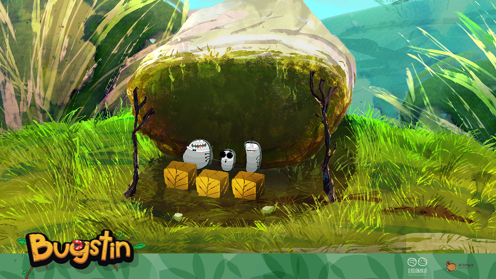
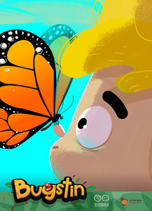
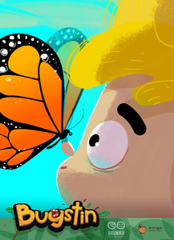
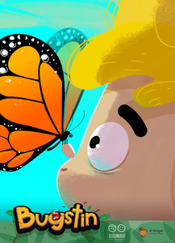

Bugstin

 


Bugstin es una serie de aventuras que invita a los niños y las niñas a la incursión en la naturaleza. En cada capítulo, Bugstin, descubre un nuevo bichito con el que vive una aventura. Al final de cada capítulo, se saca una foto con el bichito que suma a su álbum de colección personal.
Formato: Serie - 13 Capítulos - 3 min c/u
Género: Aventura
Target: Preescolar
Técnica: 2D
Estado: Desarrollo
Dirección: Guillermo Casas - Juan Pablo Figueroa Casas - Juan Manuel Costa
Guión: Luz Márquez y Carolina Scavuzzo
Estudio Ilusionario - El Birque Animaciones